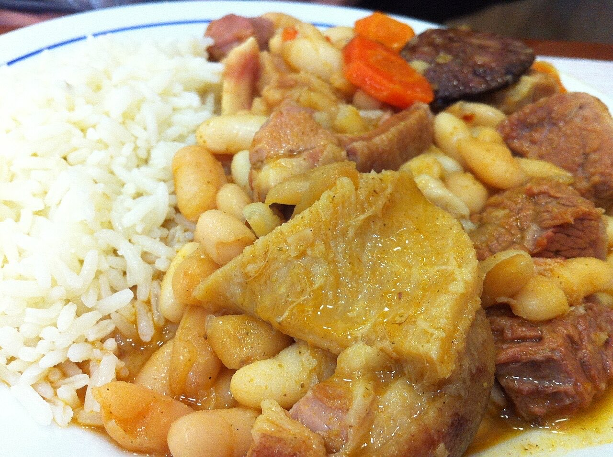

Fotografias ilustrativas — no site final usamos as vossas.
Cozinha tradicional portuguesa · Lordelo
Sabores de taberna na Rua do Paço
Uma refeição de taberna, à portuguesa.
4,7★ em 134 avaliações no Google.
Ligue ou escreva por WhatsApp.
A Taberna Lord serve cozinha tradicional portuguesa na Rua do Paço, em Lordelo. Venha à mesa sem pressa: tem 4,7★ no Google.

Fotografias ilustrativas — no site final usamos as vossas.
Pedido de reserva
Escolha o dia e a hora — o pedido chega por WhatsApp e confirmamos logo.
↑ Assim chegaria a mensagem ao vosso WhatsApp. (Nesta demonstração nada é enviado.)
Onde estamos
Proposta para Taberna Lord
Esta página foi feita de propósito para Taberna Lord por João Machado, programador web aqui de Guimarães. Inclui:
Eu trato do alojamento e da manutenção. Sem compromisso.